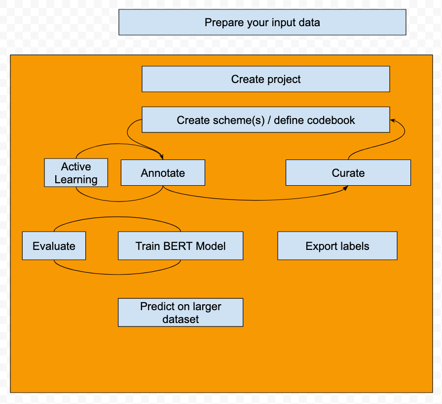

Who are we
Active Tigger is an open source project created for social scientists by social scientists. We design the application in collaboration with users to adapt to their needs. We are happy to welcome new contributors.
ActiveTigger is developed in the CREST research unit (CNRS, Polytechnique, ENSAE), within the CSS@IP-Paris team, with the help of OuestWare and the generous funding of DRARI Île-de-France, Progedo, and CREST.
What we do
ActiveTigger is an open-source software designed to support collaborative text annotation for social sciences, facilitating access to computational tools for research projects dealing with large amounts of text data. There are no entry requirements.
Main functionalities:
- Collaborative annotations of texts and project management tools.
- Fine-tune of encoder classifiers.
- Create topic analysis with BERTopic.
- Use generative AI tools.
The software’s key functionality is Active Learning, which reduces the annotation time necessary to reach high classification performance.
This is V1 🎉
Installation / Access to an instance
Two solutions exist:
Access our online instance.
- Secure storage for sensitive data.
- 40 Gb VRAM for training models.
- Need an account, get one here.
Install and run the application locally
- Download the github depo. In the terminal, enter:
git clone https://github.com/emilienschultz/activetigger.git
- Move to the
activetiggerfolder:
cd activetigger
- Use the production branch:
git checkout production
- Create the docker image
cd docker
docker compose -f docker-compose.yml -f docker-compose.dev.yml -p activetigger up
Go to http://localhost:5173/, you shoul see the app running. More information on setting up your instance..
Propose a test to see if it's indeed, up and running
Workflow

Documentation tree
Community
Join the discussion, share feedback and ask for new functionalities: Join us on Discord!
If you face issues: Read the FAQ! If you can't find an answer, ask on Discord! Alternatively, open an issue on Githubs!
Visit out team's website to learn about other activities!